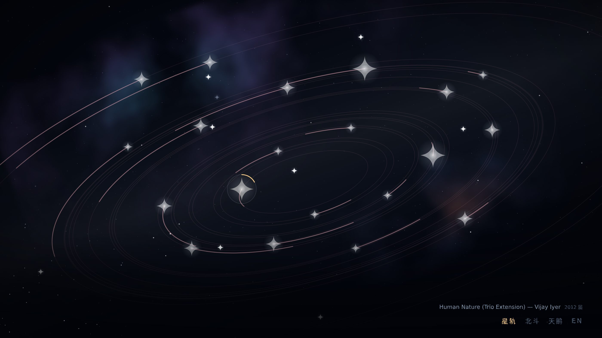
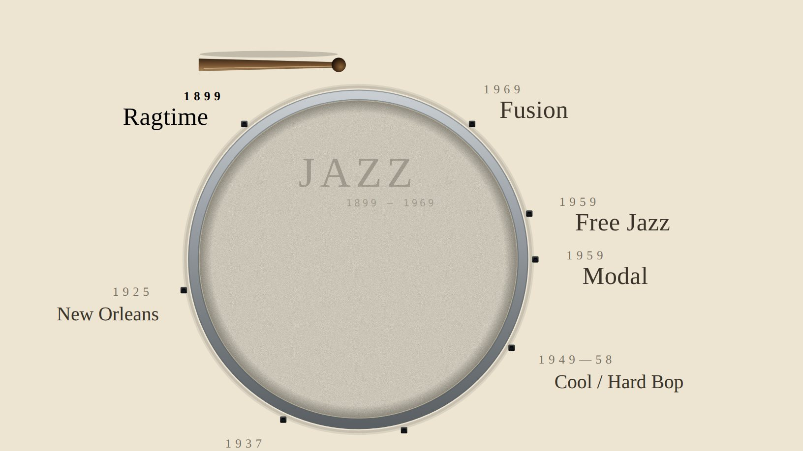

一枚爱听歌的听客,给自己画的音乐谱系。
两条已经画完的支流:一条往回追到 1899,一条只看最近 二十年。
两个页面都能听,都可以直接打开,不需要装任何东西。

DownBeat 国际乐评人票选的二十张年度专辑,按真实的赤经赤纬排成一张星图, 星的大小取自真实视星等。三个视角:全部二十张 / 用耳朵挑的北斗七首 / 按鼓挑的天鹅八首。 听过的星会变金,星座的连线是被听出来的。

一面军鼓的鼓面,九根张力杆就是八个爵士流派的时间表盘。 拨动鼓棒切换年代,右边展开那一段的引子和唱片。 每一段的版式是按它自己的音乐设计的,不是同一个模板换文字。
English: The Snare Dial · 星轨播放器的英文版在页面右下角的 EN 开关里。